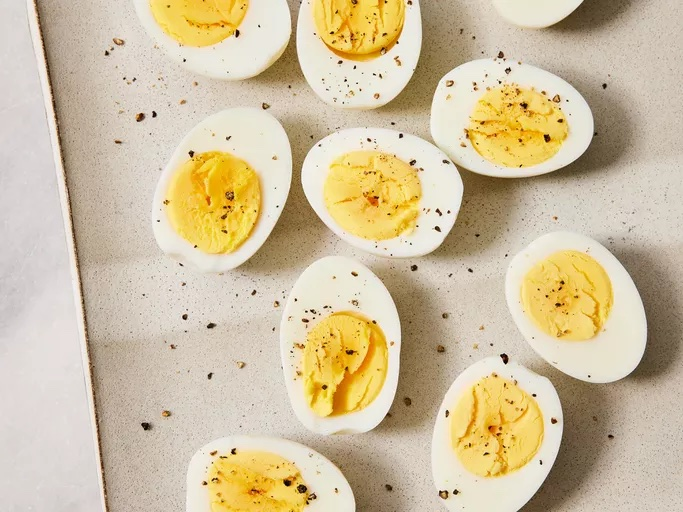

Hard boiled eggs

Description
A tasty and easy way to eat eggs.
Ingredients
Steps
- Take your eggs out of the refrigerator
- After you taken your eggs out, filled a pot with water and heat on medium heat until comes to a boil.
- Once the water is boiling gently place your eggs in the water with a laddle or spoon
- Depending on how well you want your yolks cooked. Boil your eggs for 6 to 12 minutes.
- Prepare a bowl cold water (even better if it's ice water).
- Turn of the heat and gently take you eggs out of the hot and place them in the cold water
- Let the eggd chill in the cold water for around five minutes until they've cooled down completly.
- Take your eggs out of the cold water and carefully peel the shells of the eggs off.